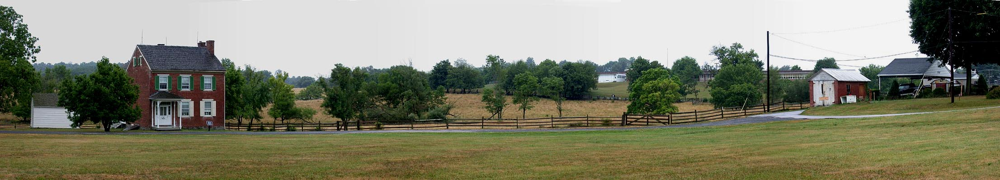

Day One with Prof. Gary Gallagher / NK010726120455_374
7/26/2001

Culp's Hill (note observation tower)
Culp's farm house
East Cemetery Hill
Cemetery Hill
View of East Cemetery Hill from the Culp farm. Looking south.